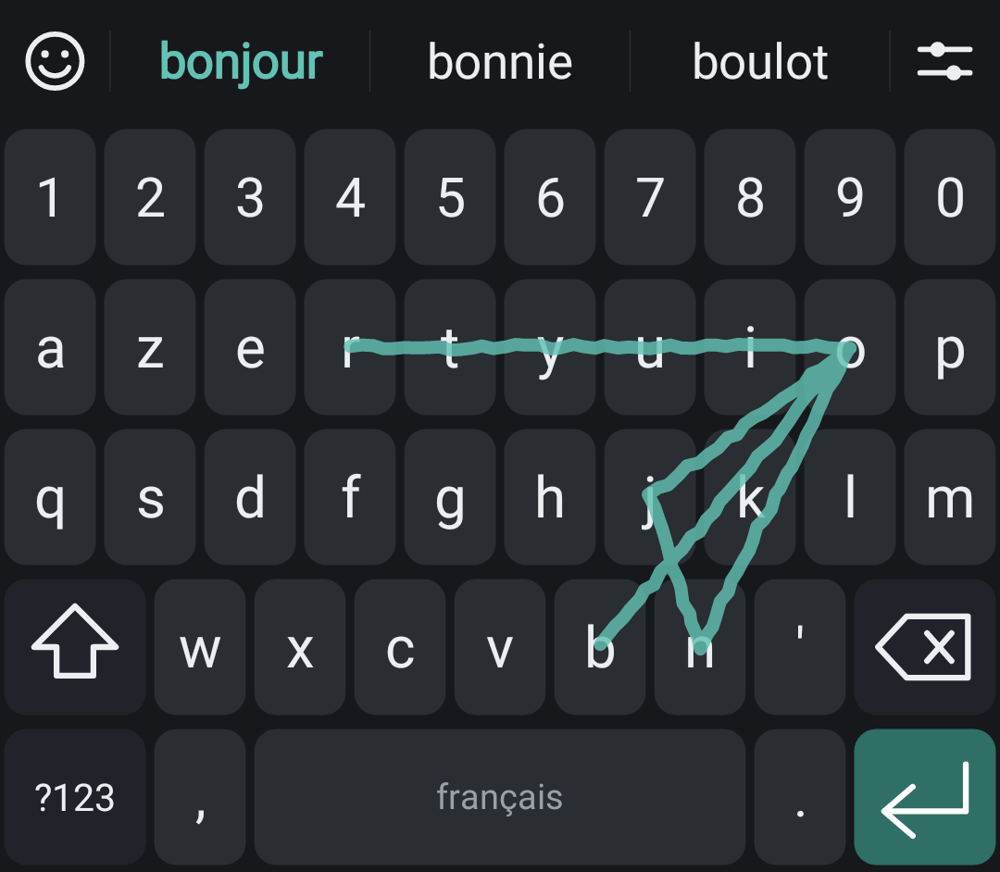
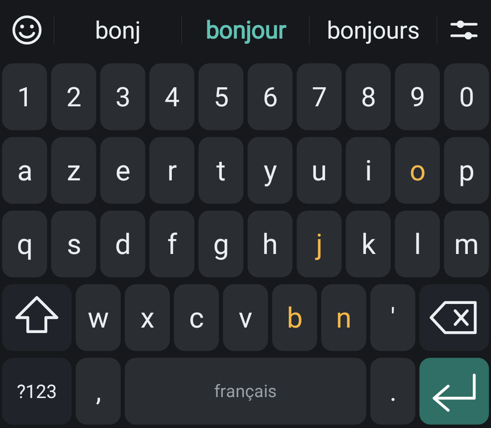
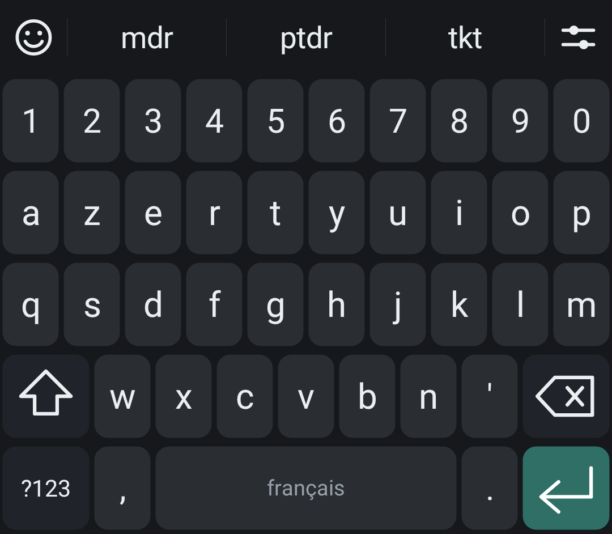
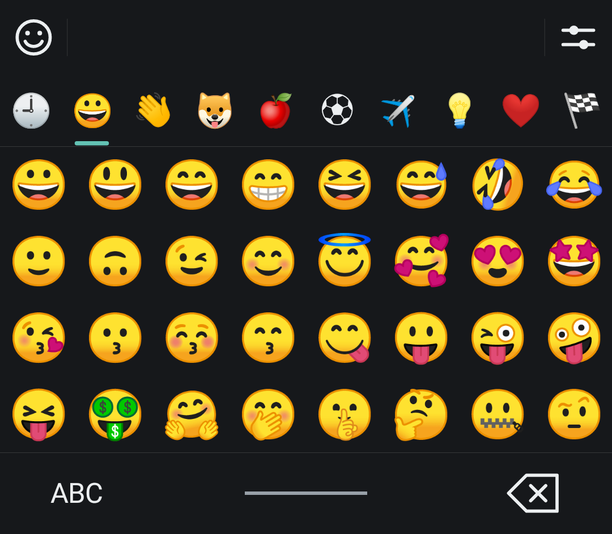
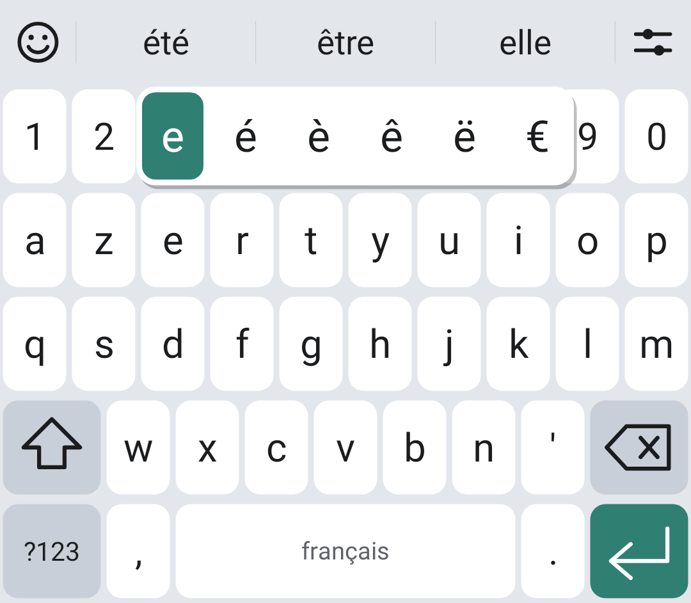
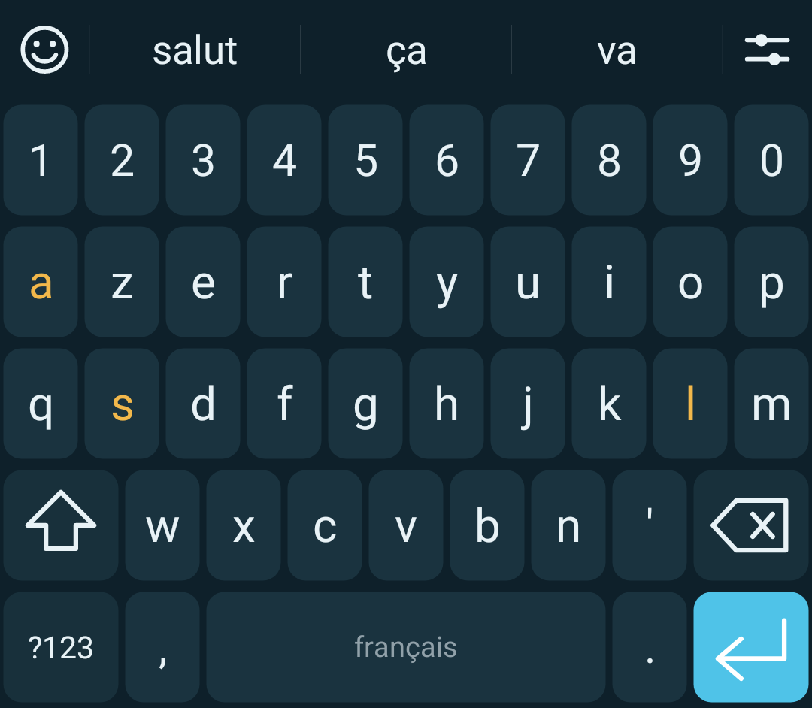
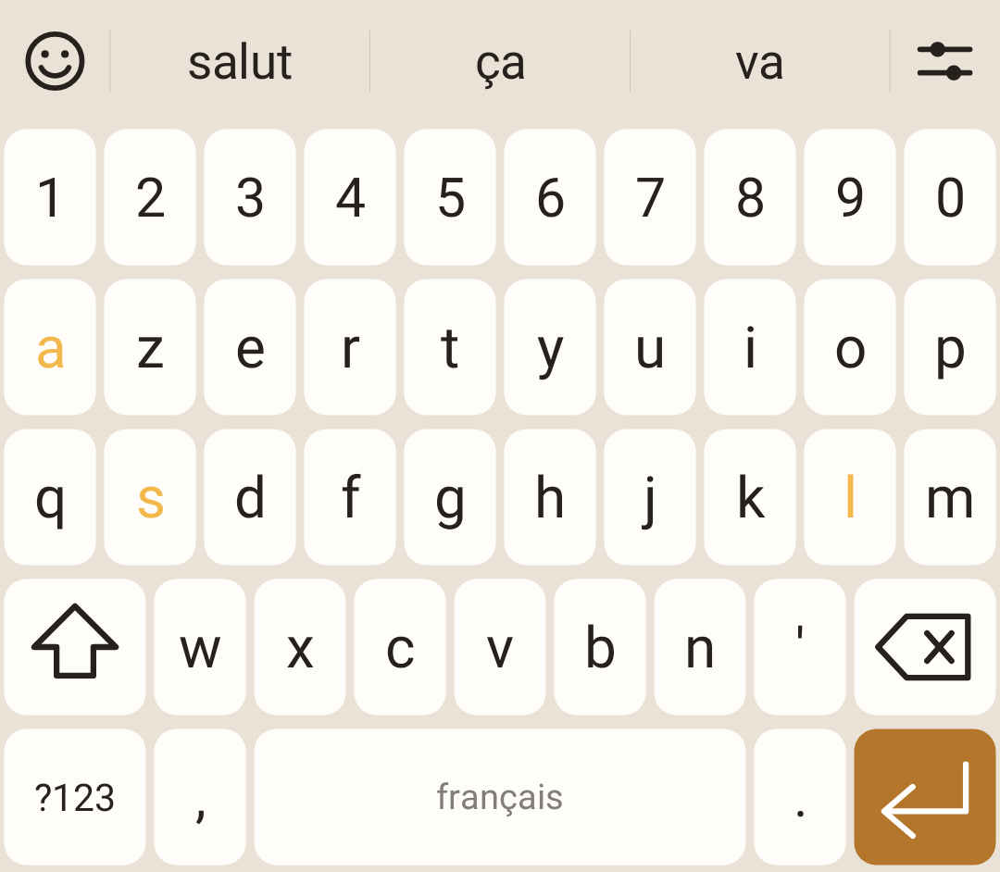
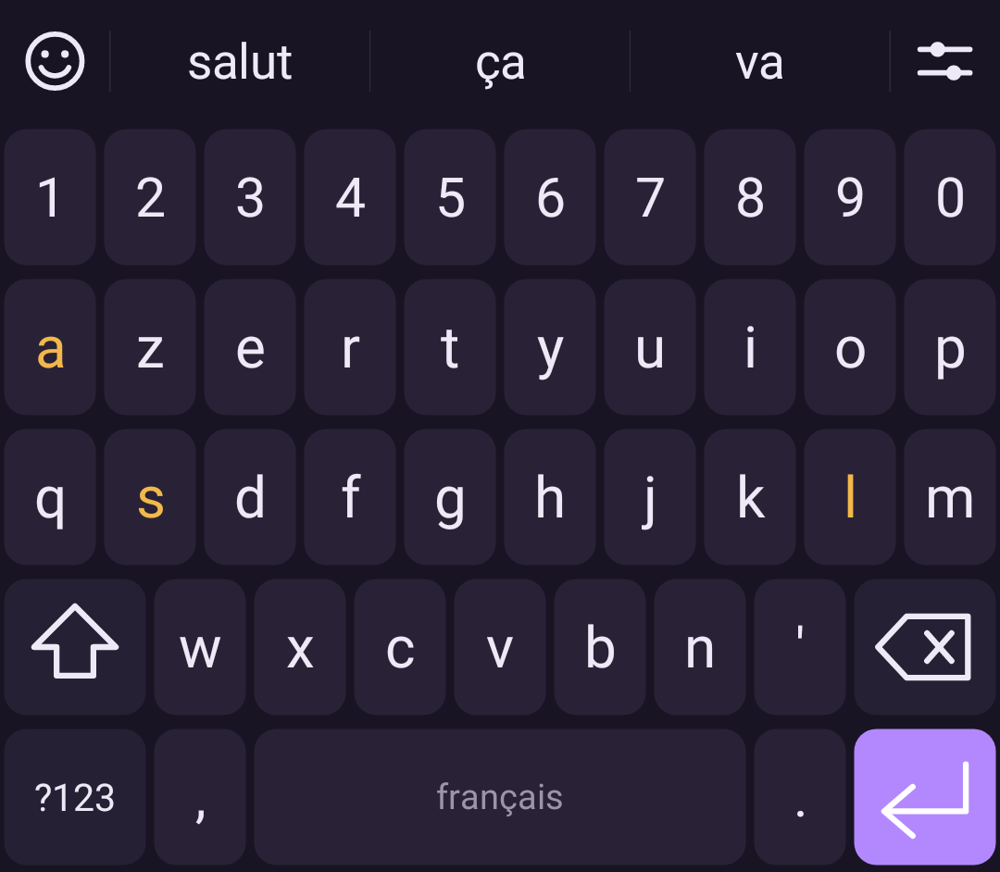

Écrire sans lever le doigt
Glissez d'une lettre à l'autre : 36Board reconnaît le mot que vous avez dessiné.
- Le tracé est comparé au chemin idéal de chaque mot, en position et en forme, puis pondéré par la fréquence du mot : environ 2 ms par mot.
- Le mot tracé reste modifiable : une variante dans la bande le remplace d'un coup, Retour arrière l'efface d'un bloc.
- Deux mots tracés à la suite sont séparés tout seuls par une espace, la ponctuation reste collée au mot.
- Les élisions passent aussi au tracé : « lattaquant » devient « l'attaquant ».

Des propositions qui parlent français
Un dictionnaire de 150 000 mots embarqué, qui ne demande rien à personne.
| Vous tapez | 36Board écrit |
|---|---|
ecole | école — les accents sont rétablis |
bonjoyr | bonjour — touche voisine |
bonour · bonjuor | bonjour — lettre oubliée, lettres inversées |
j'ai · aujourd'hui | tels quels — les élisions ne sont jamais « corrigées » |
bonsoir | bonsoir — un mot juste n'est jamais touché |
- Le clavier apprend vos mots et vos enchaînements, dans un dictionnaire personnel que vous consultez et effacez quand vous voulez.
- Un mot qui revient toujours à tort ? Un appui long sur la proposition le bannit.

Le langage des messages, sans correction intempestive
Une centaine d'abréviations et d'anglicismes ont rejoint le dictionnaire : ils sont proposés, et plus jamais « corrigés ».
| Mots | Registre |
|---|---|
mdr · ptdr · lol | familierréseaux sociaux |
tkt · jsp · askip | jeunefamilier |
stp · bcp · dsl · rdv | familier |
week-end · mail · wifi | courant |
feedback · deadline · meeting | professionnel |
spoiler · story · liker | réseaux sociaux |
La liste complète, avec le sens et le registre de chaque mot, est dans dictionnaire/familier.md. Les abréviations grossières n'y sont pas : le clavier les laisse taper, il ne les propose pas.

Tous les emoji, à un doigt
Le bouton emoji reste à gauche de la bande, même pendant que vous écrivez.
- Plus de 1 300 emoji rangés en neuf familles, vos derniers utilisés en tête.
- Ce que la police de votre téléphone ne sait pas dessiner n'est pas proposé : pas de carrés vides.
- Un drapeau ou un emoji composé s'efface d'un seul coup, sans laisser de débris dans le texte.

Les accents à portée de pouce
Un appui long sur une lettre, un glissement vers la bonne variante.
- é è ê ë, à â, ç, ù û, œ… et même €, « » ou π sur les touches qui s'y prêtent.
- Fonctionne aussi en majuscules : É, À, Ç.
- Rangée de chiffres, deux pages de symboles, verrouillage des majuscules par double appui sur Maj.
À votre goût
Clair, sombre, suivant le système, ou entièrement personnalisé : fond, touches, caractères, accent et contraste — huit palettes prêtes à l'emploi.

Océan
Bleu nuit, pour les yeux fatigués du soir.

Sable
Chaud et clair, comme du papier.

Violet
Ou composez la vôtre, au-dessus d'un aperçu qui est le vrai clavier.
Les lettres du mot en cours peuvent s'allumer sur le clavier, dans la couleur de votre choix. La hauteur du clavier se règle de 70 à 150 %.
Les petits gestes qui changent tout
Le curseur sur la barre d'espace
Glissez le doigt sur l'espace : le curseur suit, lettre par lettre, sans viser dans le texte.
Effacer par mots entiers
Partez de Retour arrière et glissez vers la gauche : la sélection grandit mot par mot, jusqu'à tout ce qui précède au bord de l'écran. Relâchez pour effacer, revenez pour annuler.
Ponctuation sans effort
Double espace pour un point, majuscule automatique en début de phrase, apostrophes et traits d'union qui restent dans le mot.
Au-dessus des touches du téléphone
Le clavier ne passe pas sous la barre de navigation ; une marge réglable le remonte si votre téléphone en a besoin.
Vibration et son
Retour haptique réglable, son des touches au choix, aperçu agrandi de la lettre touchée.
Dictionnaire personnel
Vos mots appris et vos mots bannis se consultent, s'ajoutent et s'effacent depuis l'application.
Rien ne quitte votre téléphone
Un clavier voit tout ce que vous écrivez. 36Board est construit pour n'avoir techniquement aucun moyen d'en faire quoi que ce soit.
Aucune permission réseau
La permission internet n'est pas déclarée : Android interdit à 36Board d'ouvrir la moindre connexion. Pas de compte, pas de statistiques, pas de publicité. Une seule permission demandée : la vibration.
Mots de passe protégés
Dans un champ mot de passe, rien ne se voit et rien ne se retient : pas de tracé, pas de lettres colorées, pas d'aperçu de touche, pas d'apprentissage, et le texte n'est jamais modifié en douce.
Navigation privée respectée
Quand une application demande la navigation privée, 36Board n'apprend rien. Et « Apprendre mes mots » coupé l'est partout.
Télécharger
Version actuelle : 1.14. Android 8.0 ou plus récent. Dans la page
Releases, téléchargez 36Board-1.14.apk, puis :
- Ouvrez le fichier : Android demande d'autoriser l'installation depuis votre navigateur ou votre gestionnaire de fichiers.
- Ouvrez 36Board, touchez Activer le clavier et cochez 36Board.
- Touchez Choisir 36Board pour en faire votre clavier.